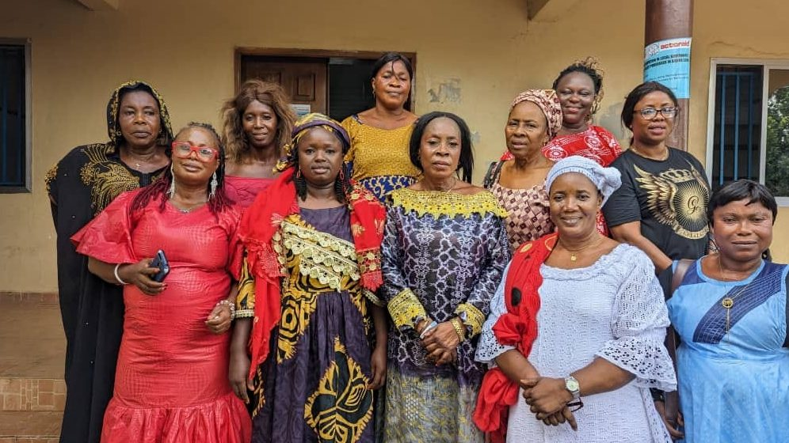

Who we are
Founded in 2006 in Makeni by young women determined to protect rights, expand girl-child education, and open politics to women.


From a university idea to a national voice
The core founding members were creative students of the University of Makeni, influenced by Vice Chancellor Rev. Fr. Dr. Joe Turay's call that the university was “not grooming job seekers but job creators.”
At the same time, founder Isha Kanu-Moriba Alieu was working with the United Nations Mission in Sierra Leone and seeing women deprived of basic rights in rural communities. She brought those ideas to a group of women — and WOFHRAD-SL was born.
After registering with the Ministry of Social Welfare, Gender and Children's Affairs, early work included teaching the Truth and Reconciliation Report in 10 secondary schools in Makeni (Justice and Peace Commission), facilitating access to justice for SGBV survivors (Justice Sector Development Programme), and youth peacebuilding across all 13 chiefdoms of Bombali during national elections (ENCISS).
What we exist to do
We strive to ensure the promotion and protection of human rights and justice, democracy, and good governance in communities, especially with the lead role involvement of women to bring change and development to society and to the rest of all humanity.
Tagline: Security Rights — Influencing Sustained Engagement on Violations of Women, Girls, and Youth in Sierra Leone.
How we work
Inclusivity & diversity
Equal opportunity to all girls and women regardless of ability, age, ethnic background, religion, political affiliation, or sexual orientation.
Consultation
We actively seek and take account of the views of members before taking decisions.
Proactivity
We set goals and take steps to achieve them rather than being reactionary.
Accountability
We honour commitments to partners, donors, beneficiaries and stakeholders, and correct mistakes promptly.
Integrity
Honesty, truth, reliability and respect.
Transparency
Openness and clarity in everything we do.
Challenges women face in Sierra Leone
Many women continue to suffer marginalization and discrimination in education, employment, political participation and social justice. Unequal opportunity is worsened by early marriage and the lack of free access, control, inheritance and ownership of land.
Political exclusion
Men often feel women should not hold leadership roles, leading to under-representation in parliament.
Literacy & education gaps
Low literacy and lack of quality education limit women's political and civic participation.
Gender-based violence
Violence during elections is used to silence and discourage women from standing as candidates. GBV remains one of the most pervasive problems in post-conflict Sierra Leone.
